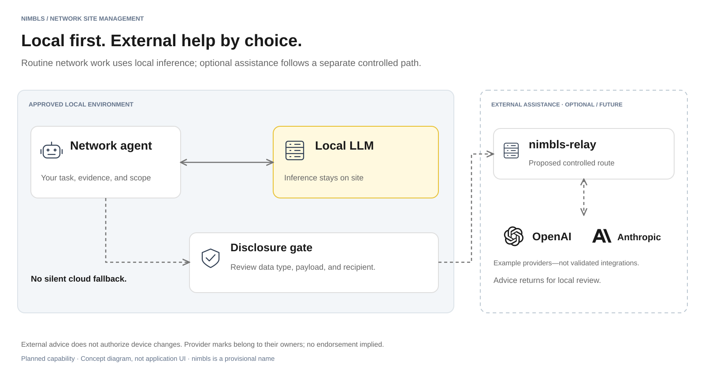

Local first. Powerful beyond.
Let the local agent request bounded assistance from an approved external model. The proposed nimbls Relay supports controlled routing; enforce disclosure policy before data leaves the site and validate advice locally.
Customer scenario
“Ask for a second opinion using only the evidence our policy allows.”
A local investigation remains inconclusive. The agent prepares minimal evidence, applies the configured rules and required approval, then requests external analysis. Any request for more data passes through the same local checks.
An external contribution with provenance, policy outcome, and a locally qualified analysis.
Demonstrate both allowed and blocked requests, the exact outgoing payload/destination, configured cost limits, and local verification.
Acceptance direction, not a claim of completed validation.

{kind=link}
{kind=link}
Standard feature card
| Audience | Teams needing advanced analysis with controlled disclosure |
|---|---|
| Problem | Complex questions may benefit from stronger models, but the complete site history or raw data cannot simply be sent away. |
| Deliverable | An external contribution with provenance, policy outcome, and a locally qualified analysis. |
| Prerequisites | Local workflow, reviewed/tested policies for each enabled data type, approved provider/route, and verified recipient handling. |
| Proof required | Demonstrate both allowed and blocked requests, the exact outgoing payload/destination, configured cost limits, and local verification. |
| Scope and limits | Relay architecture remains a proposal. Unknown data types are blocked. External advice grants no device permissions. Do not promise zero leakage, zero retention, or free frontier-model use. |
Sales explanation & demo script
30-second sales explanation
Let the local agent request bounded assistance from an approved external model. The proposed nimbls Relay supports controlled routing; enforce disclosure policy before data leaves the site and validate advice locally.
For example: “Ask for a second opinion using only the evidence our policy allows.”
Three-minute demonstration
- Introduce the customer problem and scoped request.
- Walk through prepare → gate → consult → verify using a representative case.
- Inspect the deliverable and evidence. Explain prerequisites and remaining limits.
Planned demo outline. Label pre-run results; presentation timing does not promise execution speed.